Most bathroom clutter is not actually a storage problem.
It is a zoning problem.
When everything lives in one shared space instead of a designated spot, small messes multiply fast.
These 15 hacks build toward one real system, not just a pile of individual purchases you forget to use.

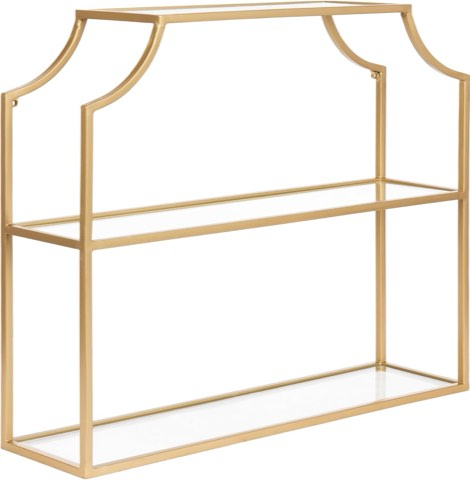
Kate and Laurel Ciel Modern Glam Wide Two-Tier Wall Shelf, 24 x 20, Gold
Shop on Amazon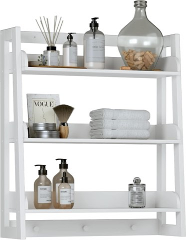
UTEX Bathroom Wall Shelf, 3-Tier Wall-Mounted Organizer with Hooks, White
Shop on Amazon1. Fold Towels With an Actual System
How you fold your towels affects how much shelf space they actually take up.
A simple tri-fold or roll uses noticeably less room than a casual stack tossed on the shelf.
Rolling also makes towels easier to grab one at a time without toppling the rest of the pile.
It is a small habit change that makes a real difference in a linen closet or open shelf.
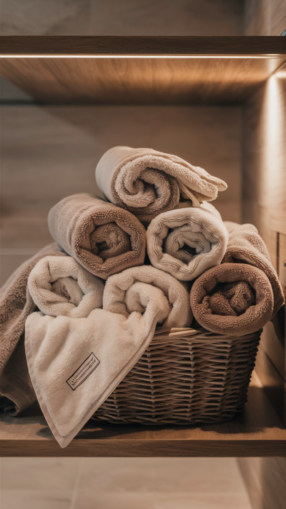
2. Switch to Stackable Bins
Stackable, uniform bins make much better use of cabinet height than a pile of mismatched boxes ever could.
Clear versions keep contents visible without you opening each one just to check what is inside.
This works especially well under the sink, where vertical space usually goes to waste.
Fewer loose items floating around means less time spent searching for anything specific.
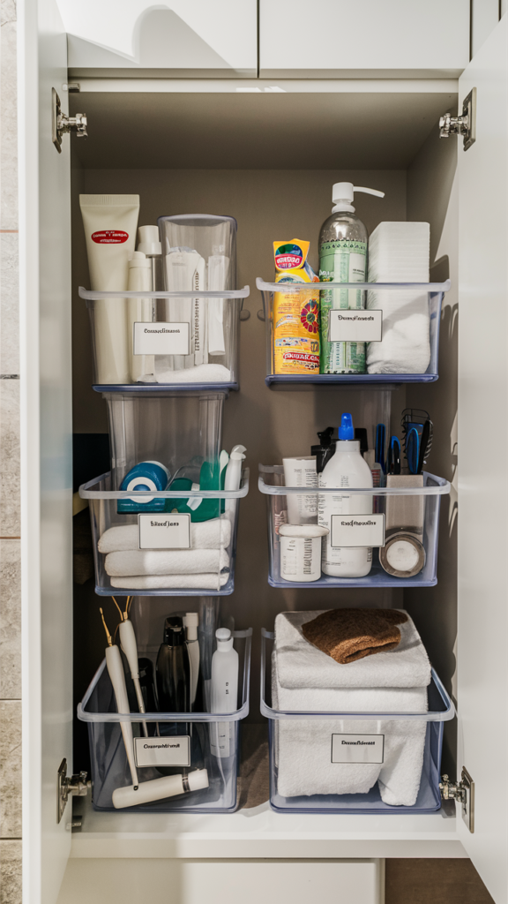
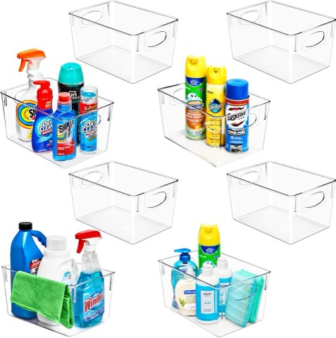
Sorbus Fridge Organizers and Storage, Clear Plastic Bins (Large, 8 Pack)
Shop on Amazon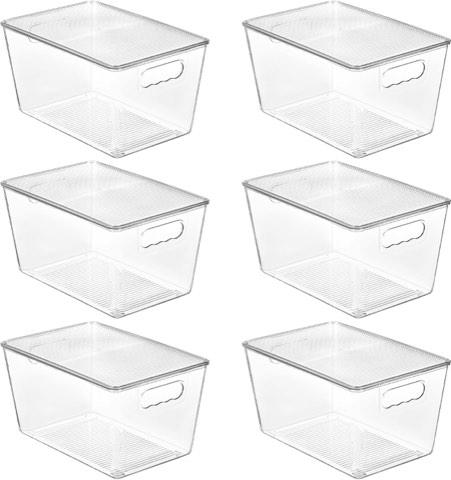
Vtopmart 6 Pack Clear Stackable Storage Bins with Lids and Handles, Large
Shop on Amazon3. Repurpose Mason Jars
A mason jar holds cotton swabs, bath salts, or small toiletries just as well as any store-bought container.
It is an easy way to add storage without buying anything new at all.
Grouped together on a shelf or tray, a few jars read as styled rather than improvised.
It is one of the cheapest options here, and often one you already have sitting in a kitchen cabinet.
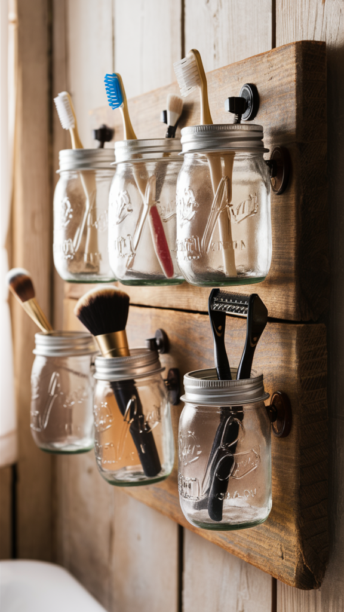
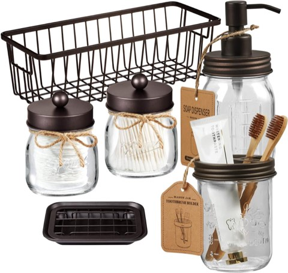
SheeChung Mason Jar Bathroom Accessories Set, 6Pcs Rustic Bathroom Set, Brown
Shop on Amazon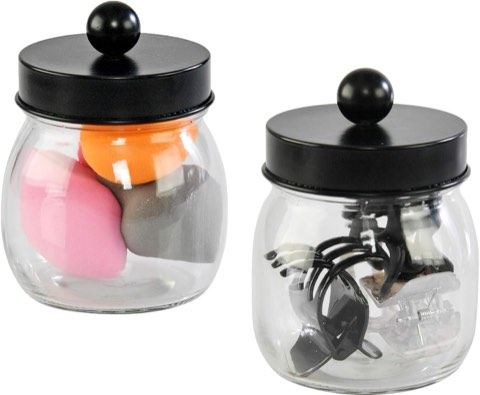
HOME-X Mason Jar for Bathroom Organization, Apothecary Jars with Lids, Set of 2 8oz
Shop on Amazon4. Add Hooks Wherever They are Missing
A single towel hook rarely covers a whole household's needs.
Adding a few more, behind the door, beside the shower, near the sink, solves the daily "where do I hang this" problem instantly.
Hooks are cheap, quick to install, and do not require any real planning ahead of time.
This is one of the lowest-effort, highest-impact fixes on the entire list.
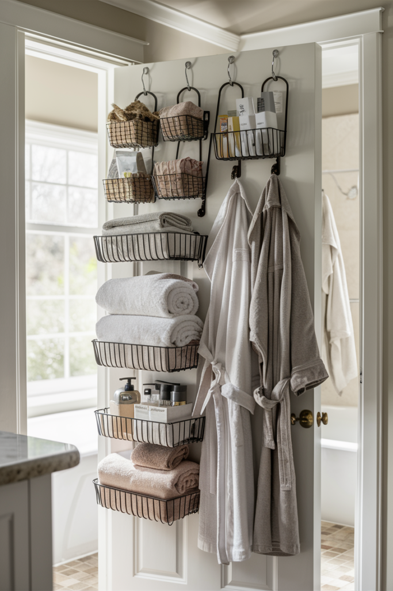
5. Use the Corners
Corner shelving claims space that otherwise goes completely unused in most bathrooms.
A tiered corner unit works especially well in a small bathroom with limited wall space elsewhere.
It is one of the few storage additions that does not compete with existing furniture for floor space.
Corners are consistently the most overlooked storage opportunity in a small bathroom.
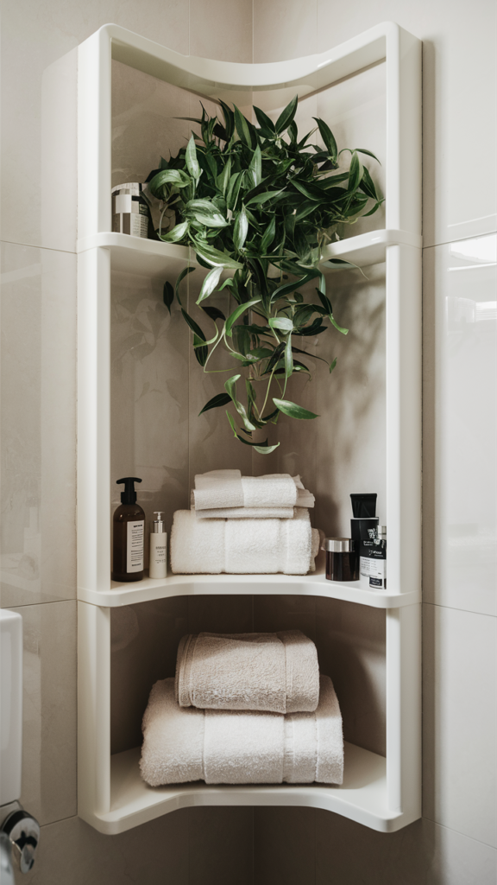
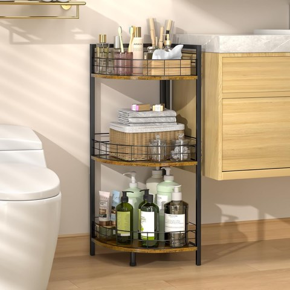
DAOUTIME Bathroom Standing Shelf, 3 Tier Corner Stand, Free-Standing Shelf Units
Shop on Amazon6. Give Everyone Their Own Shower Caddy
A shared shower turns into a pile of competing bottles fast, especially in a busy household.
A separate caddy per person keeps everyone's products contained and easy to grab without a daily negotiation.
This cuts down on the hunt for a specific bottle among five identical-looking ones.
It also makes it obvious at a glance when someone's running low on something.
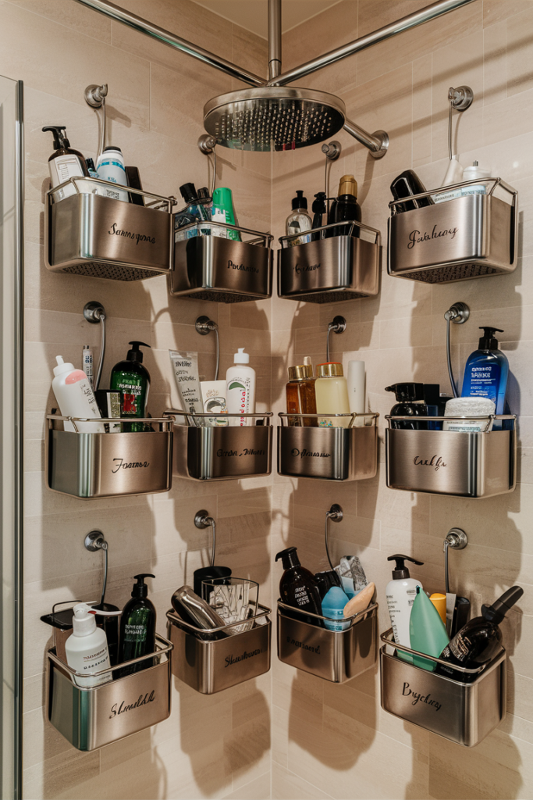
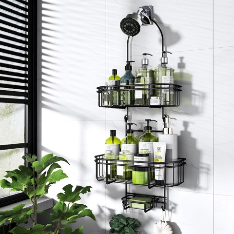
WXCGX Hanging Shower Caddy Over Shower Head Organizer: Stainless Rustproof Bathroom Storage
Shop on Amazon7. Label Everything That Is not Obvious
Labels are not just for the pantry.
A labeled bin gets put back in the right spot far more reliably than an unlabeled one ever does.
This matters even more in a shared bathroom, where everyone needs to know the system without having to ask.
A label maker helps, but a marker and masking tape work in a pinch too.
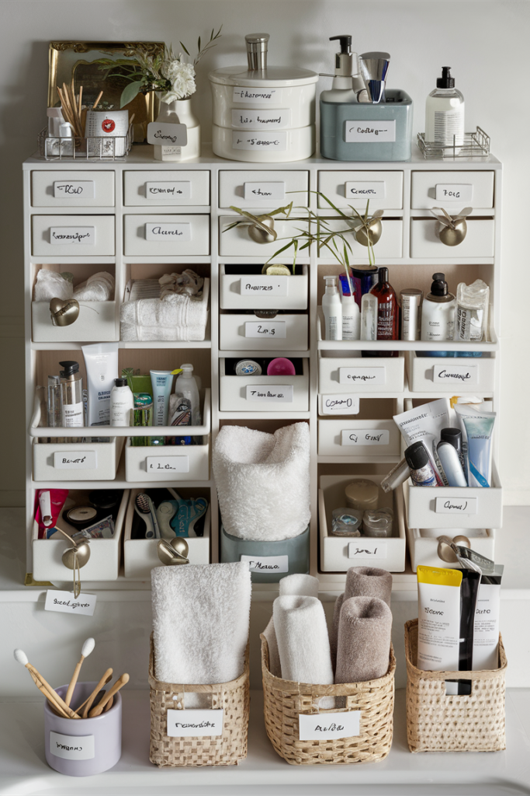
8. Install Floating Shelves
A floating shelf adds storage without the bulk of a full cabinet taking up visual space.
It works especially well above the toilet or beside the vanity, where a cabinet simply would not fit.
Keep what is on display intentional.
A floating shelf reads as styled, not just storage, when it is not overloaded.
This pairs naturally with the zone system further down this list.
9. Add a Lazy Susan to a Deep Cabinet
Deep, dark cabinets are exactly where bottles go to get forgotten.
A turntable keeps everything in that back corner actually reachable, instead of lost for months.
No more digging past the front row just to find what is hiding behind it.
This fix is especially useful under the sink, where cabinet depth is usually the biggest obstacle.
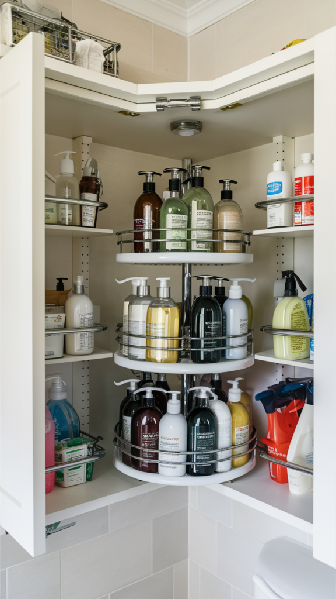

10. Switch to Clear Containers
Clear glass or acrylic containers do double duty.
They look intentional, and they make contents instantly visible.
Cotton balls, cotton swabs, and bath salts all look more like decor than clutter once they are decanted.
No more guessing what is inside an opaque box before you open it up.
This swap alone can make a cluttered counter look considerably more put-together.
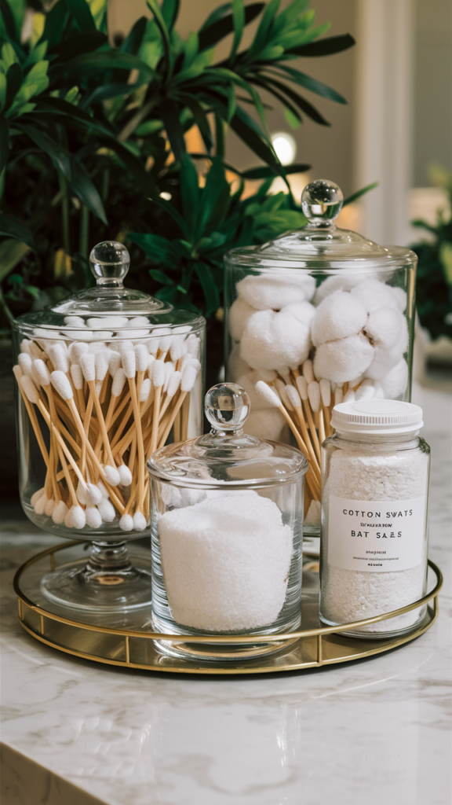
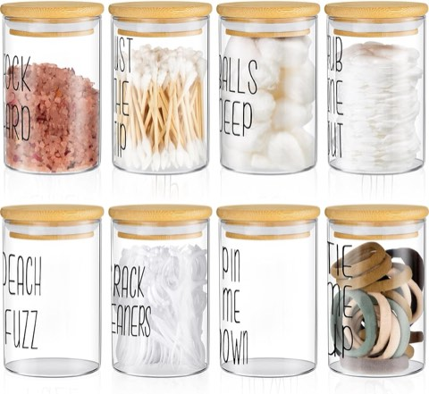
Tessco 8 Pcs Cotton Swab Holder Dispenser Glass Apothecary Jars with Bamboo Lids 10oz Clear
Shop on Amazon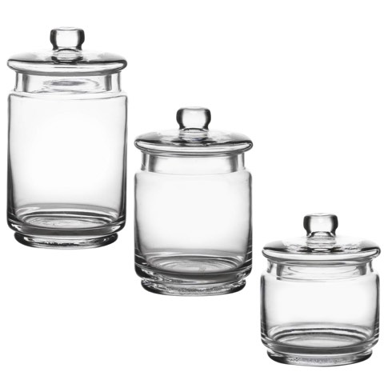
WHOLE HOUSEWARES Glass Apothecary Jars with Lids, Set of 3 for Bathroom Storage
Shop on Amazon11. Hang What Can Be Hung
Wire baskets on hooks free up shelf and counter space fast.
Rolled towels, spare toiletries, or cleaning supplies all work well hung rather than stacked somewhere flat.
This suits a smaller bathroom especially well, where every flat surface is already spoken for.
Vertical storage almost always beats horizontal in a tight footprint.
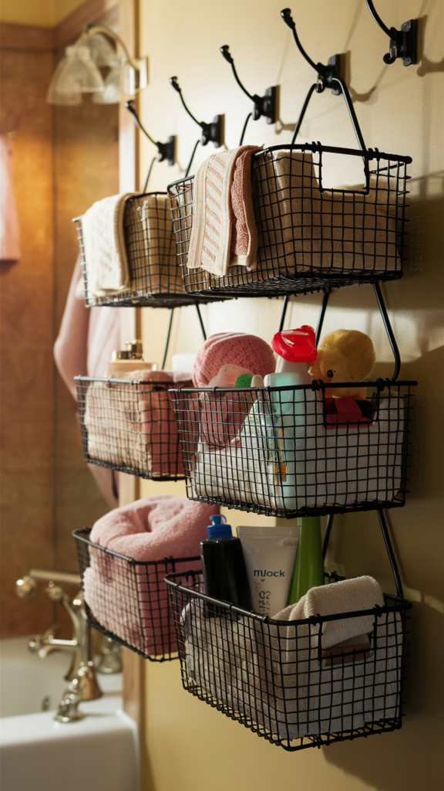
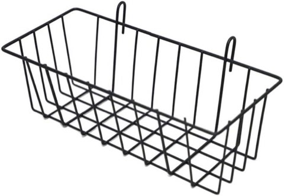
Hanging Wire Basket with Hook, Hanging Wire Basket Wall Storage and Display Basket
Shop on Amazon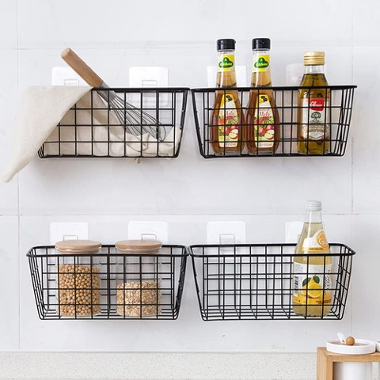
Metal Hanging Wire Basket with Hooks for Storage, Bawuie 4 Pack Wall Mount on Door
Shop on Amazon12. Add Magnetic Strips for Metal Tools
Tweezers, nail clippers, bobby pins — small metal tools disappear into drawers constantly, no matter how organized you try to be.
A magnetic strip mounted inside a cabinet door keeps them visible and off the counter.
It is a five-minute install that solves a surprisingly persistent clutter problem.
This works especially well paired with drawer dividers elsewhere, two systems for the exact same category of items.
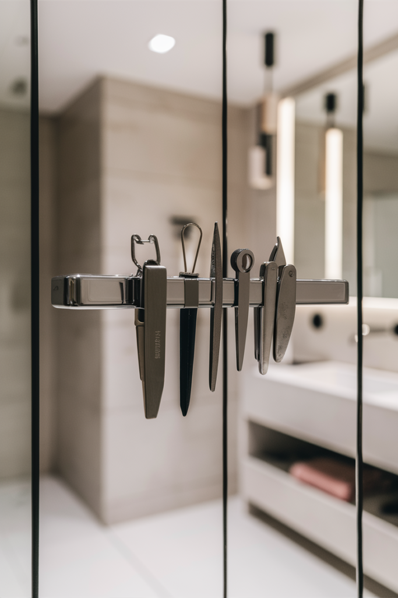
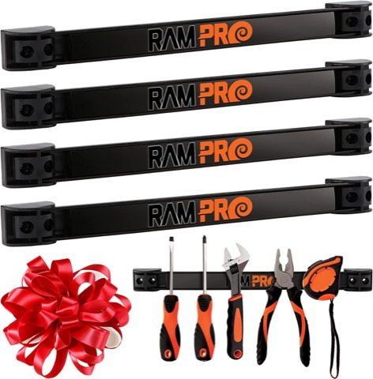
12" Magnetic Tool Holder Strip, A Tool Magnet Bar for Garage Organization
Shop on Amazon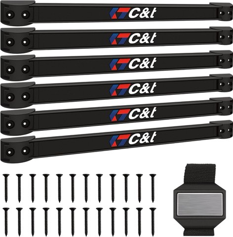
Magnetic Storage Organizer Tool Holder, Magnetic Tool Holder Strip, 6-Pack
Shop on Amazon13. Put the Door to Work
A bathroom door is wasted space more often than not.
An over-the-door rack or pocket organizer adds real storage without touching a single wall.
Hair tools, cleaning supplies, and extra towels all work well here.
It is one of the few upgrades that is fully reversible if your layout ever changes.
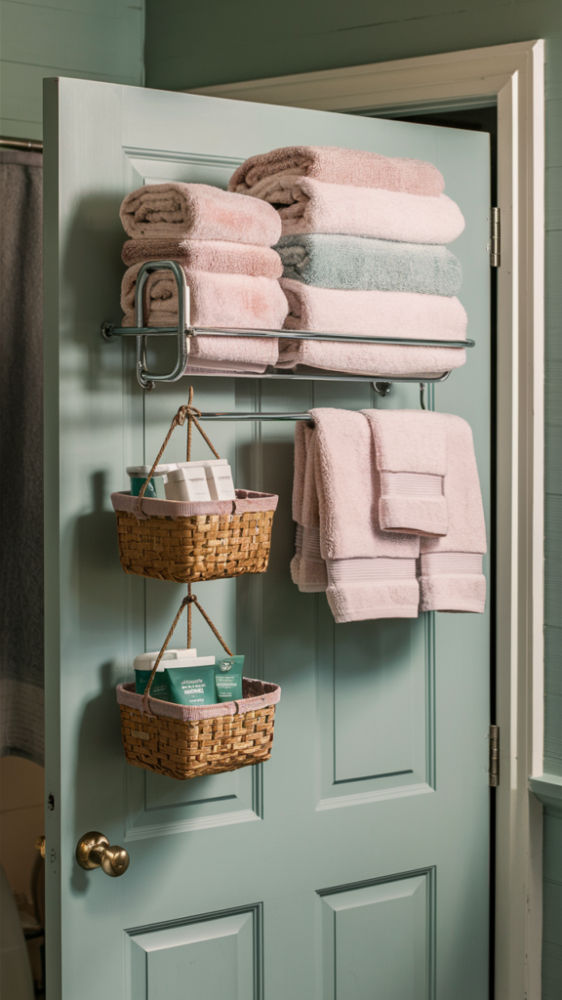
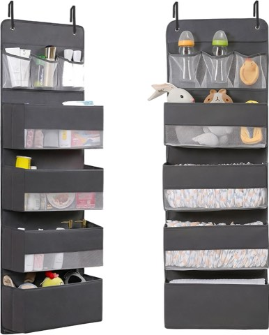
Jay-Chi Over Door Hanging Organizer Storage, 7 Large Pockets Closet Bathroom Organizer
Shop on Amazon14. Divide and Conquer the Drawers
A drawer without dividers turns into a junk drawer within a week, no matter how organized it started out.
Simple inserts keep small items, bobby pins, nail clippers, lip balm, from sliding into one tangled pile.
Grouping by category, not by size, makes items easier to find under time pressure.
This is one of the cheapest fixes on the whole list.
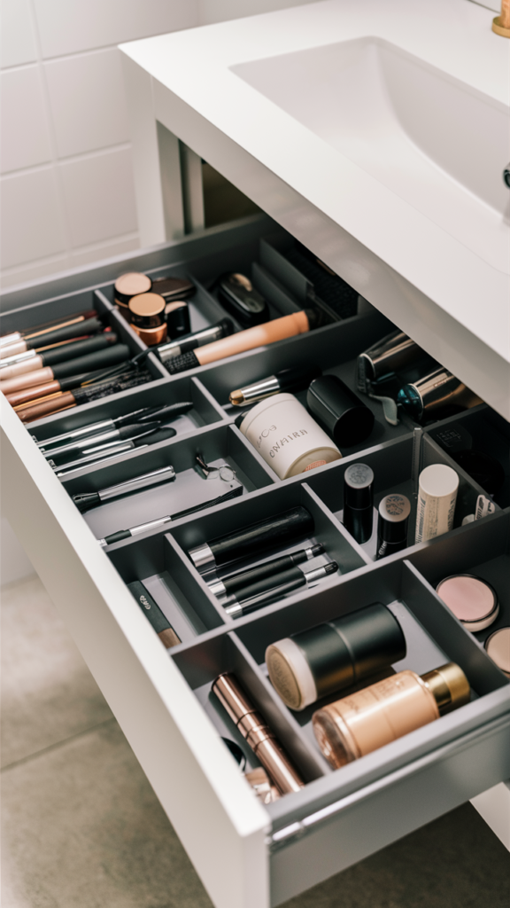
15. Build Zones Before Buying Anything
Before a single new bin or basket shows up, sort by actual use: daily essentials, weekly items, and rarely-used backups.
Daily items go at arm's reach.
Everything else can live higher up or further back, out of the way.
This one step makes every other hack on this list more effective than it would be on its own.
A system built on real habits sticks.
One built on good intentions usually does not.
Pick Two or Three to Start
None of these 15 hacks require a full bathroom renovation.
Start with the zone system, then layer in whichever hacks solve the specific clutter already happening in your space.
A system built around actual daily habits holds up far longer than one built around what looks good in a photo.
Pick two or three to start with, and build from there.